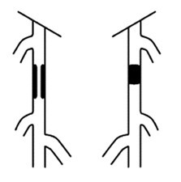
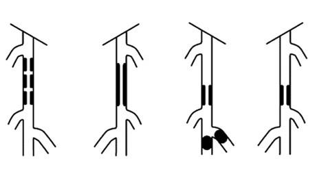
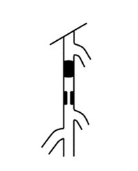
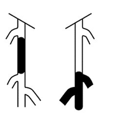

首页
首页 返回
返回| 分级 | 临床表现 |
|---|---|
| A型 | 1.单处狭窄，长度≤ 10cm 2.单处闭塞，长度≤ 5cm  |
| B型 | 1.多处狭窄或闭塞病变，每处≤5cm 2.单处狭窄或闭塞（长度≤15cm），未累及膝下腘动脉 3.单处或多处病变，胫动脉未受累并可用作旁路手术时的远端流出道 4.钙化严重的闭塞（长度≤5cm） 5.单纯腘动脉狭窄  |
| C型 | 1.多处狭窄或闭塞，总长度>15cm，伴或不伴有严重的钙化 2.两次腔内治疗后复发，仍需治疗的的狭窄或闭塞  |
| D型 | 1.股总动脉和股浅动脉的慢性完全闭塞，>20cm且累及腘动脉 2.腘动脉和膝下三分支的慢性完全闭塞  |
说明
"A"级病变局限，有较好的预期结果，应该通过腔内技术来治疗；
"B"级病变稍有延长，但权衡手术与腔内治疗的危险性和预期通畅情况，仍然以腔内治疗为主；
"C"级病变通过手术重建有较好的效果，但对于伴有高危因素的患者可以尝试选择创伤小的腔内技术；
"D"级病变则应当选择手术治疗。